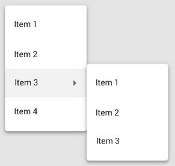

Component Architecture

Component Architecture
- Divide et impera
- Teilen der Webseite in einzelnen Components
- Verteilung und Strukturierung der Komplexität
- Components
- Enthalten zusammengehörige Funktionalität
- Haben feste Schnittstellen
- Möglichst lose Kopplung und hohe Kohäsion
- Analog wie Legosteine
- Abstrahieren Struktur und Styling
Component Architecture
- Was kann alles eine Component sein?
- Buttons, Text Fields, Labels, etc.
- Search Bar, Form Groups, Cards, etc.
- Header, Footer, Overlays, etc.
- Pages

Components
<button value="Submit" onclick="alert('Button clicked!')"/>
- Components haben feste Schnittstellen
- Damit können sie modular eingesetzt werden
- Es können Parameter rein und rausgegeben werden
Components in React
- React functions sind Components
- Eine React function kann Parameter entgegennehmen
- Über einen Callback kann ein Wert zurückgegeben werden
export default function Button({ primary, label,
onClick, className }) => {
const mode = primary ?
'button--primary' : 'button--secondary';
return (
<button
type="button"
className={['button', mode, className].join(' ')}
onClick={() => onClick()}
/>
{label}
</button>
);
};
Components in React
- Über propTypes können wir eine Schnittstelle definieren
- Über defaultProps können wir Defaultwerte hinterlegen
export default function Button({ ... }) {
...
};
Button.propTypes = {
primary: PropTypes.bool,
label: PropTypes.string.isRequired,
onClick: PropTypes.func,
className: PropTypes.string,
};
Button.defaultProps = {
primary: false,
onClick: undefined,
className: '',
};
Component Architecture
- Vorteile:
- Konsistenz im Styling
- Wiederverwendbarkeit
- Schnellere Entwicklung
- Einfachere Instandhaltung
- Nachteile:
- Tiefe Verschachtelungen möglich
Praxis: Component Architecture
- Aufteilen der ListView Seite in kleinere Components
- Überlegt euch selbst, wie ihr die Seite aufteilen könnt
- Basiskomponenten stehen bereit um Zeit zu sparen
- https://gitlab.com/dhbw_webengineering_2/rich_client_react (branch: step_3-component_architecture)